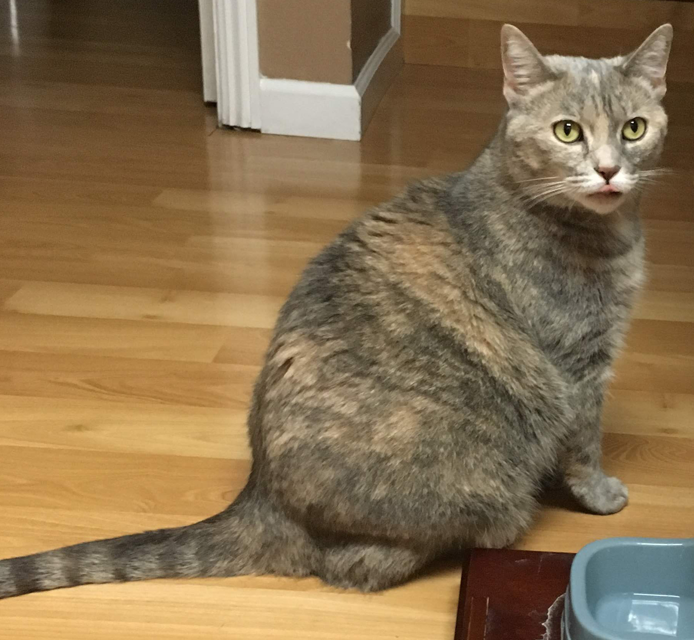

About Mimi 
Mimi is my cat who I picked up from an animal shelter in 2017 (yes she is still young and she is very fat). The document says she is a domestic short hair, female, and was born (discovered) on April 16. There is no way for me to find out her real origin. Let’s just pretend everything follows the document and remain her birth as a secret. But don’t tell her because I told her as documented.
There were many other cute little kittens in the shelter but I selected her (a 1-year-old at that time, but not as fat as now) because her documented name is Luna. Obviously it caught my eye and like anyone could imagine I thought it was fate. If I don’t take her, who should? The staff got surprised in the beginning because she was labeled as “not easy” and “less kind” (literally yellow warning tagged). But immediately they understand me when I showed my ID. Why do I call her Mimi later on? First, not to confuse with myself. Second, Mimi means “little kitten” in Chinese and I hope she stays cute and as little as possible. Turns out it’s not working though.
Anyway, Mimi has spent happy 3 years with me now and seems like she’s friendly (at least to me), and easy going. It took some time for her to get close to people but she will be if you give her enough time. It didn’t take long (one month?) before my boyfriend (now husband) and her to be good friends. Most of the times independent but also sticky some times. That’s very sweet. Funny thing is she likes pretending she doesn’t care about you or what you are doing until later on you notice her slowly getting close to you. Everything is perfect other than one thing: her weight. I have a lot of evidences of her showing her fat belly (seems like she’s proud of it) like this one:
A typical day of her life
Sleeping:
Looking at her self:
Looking at you:

Sometimes thinking deep (“I think Luna is not doing right about her research…”):

Most importantly, eating:
I have tons of Mimi photos but I will stop here for her privacy concern. Hopefully she doesn’t find out about this website.